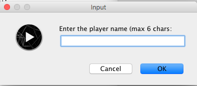
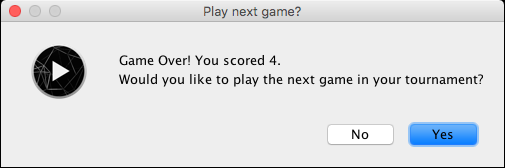

Objectives
On completion of this lab you should:
- be familiar with the Player class.
- be familiar with how arrays are used in the Player class.
- be familiar with how the Player class is incorporated into the game.
- be able to understand and call simple data analysis algorithms.
- be able to switch output from console to dialog boxes when appropriate.
In this lab, you will work on PongGameV5_0, PongGame7_0 and PongGameV8_0.
Remember our lab advice!
- Your labs are not a race to be the first student finished.
- It is very important that you:
- take your time.
- read the instructions carefully.
- ask your lecturer to explain concepts that you don't understand; that is what we are here for!
- attend ''ALL'' your classes; attendance will be taken.
- where code is given in labs, don't cut and paste it; maximise your learning by typing the code in.
The Game of Pong - Version 6
In this version of the game, we introduce a new Player class. For this version, the Player class will have limited functionality.
Open your latest version of PongGame version 5. If you are not confident that it is working, you can use this solution here.
- Save this as PongGameV6_0. Now, make changes to this work.
Player
- Now we will have a player object who plays a game.
- We can store details about the player
- the player's name
- the number of games they wish to play for the current tournament
- a collection (array) of the scores of each of the games in the current tournament
- the number of scores added (games played) at this time.
- We need to have getters and setters for these fields.
- We need a method that adds a value to the scores array.
- We also have a toString() method that returns a String version of the object. This is useful when we want to print details of a player object.
Player class
- Add the following code in your sketch (don't cut and paste it, type it in):
public class Player
{
private String playerName;
private int[] scores;
//no accessor and mutator is created for the count field as it is an internal field that
//has a dual purpose:
// 1. represents the next available index in the array
// 2. represents the number of high scores added to the array
private int count;
//Constructor to create a player with a starting name and sets the size of the array
//to the number of games in the tournament, as entered by the player.
public Player(String playerName, int numberOfGames)
{
this.playerName = playerName.trim().substring(0,6);
scores = new int[numberOfGames];
count = 0;
}
//accessors
public String getPlayerName()
{
return playerName;
}
public int[] getscores()
{
return scores;
}
//mutator for player name
public void setPlayerName(String playerName)
{
this.playerName = playerName.substring(0,6);
}
//mutator for high score array
public void setscores(int[] scores)
{
this.scores = scores;
}
//method to add a score at the next available location in the scores array
public void addScore(int score)
{
if (score >= 0){
scores[count] = score;
count++;
}
}
//method builds a nice String representation of the player name and their high scores.
//This string is then returned
public String toString()
{
String str = "Scores for " + playerName + "\n";
for(int i = 0; i < count; i++){
str = str + " Score " + (i+1) + ": " + scores[i] + "\n";
}
return str;
}
}- Ensure that you understand the code you have written in. For example:
- What validation rule is imposed on the player's name?
- How does the toString() work? Why do we need a loop?
- What is the purpose of the count data field in the addScore() method and overall?
Changes in the PongGame class
- Firstly, we need to declare a Player in the class (near the declaration of Ball and Paddle objects:
Player player;Then we need to add in the following to the setup method to construct the player.
void setup()
{
:
:
//create a player object
player = new Player(" PongMaster ", maxNumberOfGames);
}The effect of these two pieces of code is that a Player object, called player setup and ready to be used and to play.
So, when do we add the scores to the scores array? We do this when we have lost all our lives, thus finished a game. So look for the part of the code in the draw() method that deals with when the player has no more lives left in the current game. You need to add the following line of code:
player.addScore(score);so that the full part of if.. else statement is
//If the player has no lives left in the current game
else{
player.addScore(score); //add the score of the current game to the array in player
numberOfGamesPlayed++;
//If the player has more games left in the tournament,
//display their score and ask them if they want to continue with the tournament.
if (numberOfGamesPlayed < maxNumberOfGames){
resetGame();
}- Now that we have information stored about the player and their scores for the games, we will use this information at the end of the tournament. Specifically, we will print out the player's details using the toString() method using the following code, so change the tournamentOver() code to:
//method displays the player information, high scores and statistics, before exiting the program.
void tournamentOver()
{
println("Game Over!\n");
println(player.getPlayerName() + ", your tournament is over!\n"
+ "Number of games played: " + numberOfGamesPlayed
+ "\n\n" + player.toString());
exit();
}You should be able to now play the game and get the information reported at the end of the tournament. The information will be sent to the console. Later we will redirect this information to the dialog boxes via JOptionPane.
You should save this as PongGameV6_0.
The Game of Pong - Version 7
In this version of the game, we add methods that calculate the highest and lowest score in the player's score array as well as calculating the average score over all the scores.
Open your latest version of PongGame version 6. If you are not confident that it is working, you can use this solution here.
- Save this as PongGameV7_0. Now, make changes to this work.
Player
We now add three methods to the Player class:
- lowestScore()
- highestScore()
- averageScore()
Ensure that you understand how the methods work.
//method returns the highest score stored in the scores array
//if there is only one element in the scores array, this value is returned as the highest
public int highestScore()
{
int highestScore = scores[0];
for(int i = 1; i < count; i++){
if (scores[i] > highestScore){
highestScore = scores[i];
}
}
return highestScore;
}
//method returns the lowest score stored in the scores array
//if there is only one element in the scores array, this value is returned as the lowest
public int lowestScore()
{
int lowestScore = scores[0] ;
for(int i = 1; i < count; i++){
if (scores[i] < lowestScore){
lowestScore = scores[i];
}
}
return lowestScore;
}
//method calculates and returns the average of all the high scores stored in the scores array
public int averageScore()
{
int total = 0;
for(int i = 0; i < count; i++){
total = total + scores[i];
}
return total / count;
}- Ensure that you understand the code you have written in. For example:
- What is the function of the variable highestScore in the highestScore() method?
- Why is the variable highestScore local?
- Is this appropriate?
Changes in the PongGame class
- We don't make any changes to how the game works in this version update. We only give out more information about what happened during the game. So we simply change the tournamentOver() method to report on the three new values that our new methods calculate. So our updated tournamentOver() method will now be:
//method displays the player information, high scores and statistics, before exiting the program.
void tournamentOver()
{
println("Game Over!\n");
println(player.getPlayerName() + ", your tournament is over!\n"
+ "Number of games played: " + numberOfGamesPlayed
+ "\n\n" + player.toString()
+ "\n\nHighest Score: " + player.highestScore()
+ "\nLowest Score: " + player.lowestScore()
+ "\nAverage Score: " + player.averageScore());
exit();
}- You should be able to now play the game and get the extra information reported at the end of the tournament. The information will be sent to the console. Next we will redirect this information to the dialog boxes via JOptionPane.
- You should save this as PongGameV7_0.
The Game of Pong - Version 8
In this version of the game, we add the JOptionPane methods that allow us to read data in from the keyboard and to send data out via dialog boxes.
Because we can now use user input, we use this in two places:
- setting up the player (name, number of games)
- we give the user the option to quit the game after every game is finished.
Open your latest version of PongGame version 7. If you are not confident that it is working, you can use this solution here.
- Save this as PongGameV8_0. Now, make changes to this work.
PongGame class - changes
Firstly note that we will only use the driver class (in this case PongGame) to read in data or report data. This allows the user of classes to decide how data comes in/goes out and makes the classes more re-usable.
So, the only changes in this version update is in the PongGame class.
We firstly import the swing package as the first line of code.
import javax.swing.*;Changes in setup() method
- Change the setup method so that it is :
void setup()
{
size(600,600);
noCursor();
//setting up the paddle and the ball with hard-coded sizes.
//This could be updated so that the values are read from the user at the start of the tournament.
paddle = new Paddle(20,100);
ball = new Ball(20.0);
//create a player object with the data entered by the user
maxNumberOfGames = Integer.parseInt(JOptionPane.showInputDialog("Welcome to the Pong Tournament\n\n Please enter the number of games you would like to play: ","3"));
player = new Player(JOptionPane.showInputDialog("Enter the player name (max 6 chars: "), maxNumberOfGames);
}- Ensure that you understand the code you have written in. For example:
- The first use of the showInputDialog method returns a string which is then converted to an integer using Integer.parseInt
- The second use of showInputDialog calls the method and uses the value returned directly in the Player constructor. So if "Siobhan" were entered in the dialog box, this would be the same as using
player = new Player("Siobhan", maxNumberOfGames);- Now run this code: You will get the following dialog boxes:
- Then you will get the following: 
Changes in the draw() class - game functionality
- We add an extra functionality to the game in this version update.
- When a player has finished a game s/he is asked do they wish to continue (only if there are still games left)
- This
//If the player has no lives left in the current game
else{
player.addScore(score);
numberOfGamesPlayed++;
//If the player has more games left in the tournament,
//display their score and ask them if they want to continue with the tournament.
if (numberOfGamesPlayed < maxNumberOfGames){
int reply = JOptionPane.showConfirmDialog(null,
"Game Over! You scored " + score + ".\nWould you like to play the next game in your tournament?",
"Play next game?",
JOptionPane.YES_NO_OPTION);
if (reply == JOptionPane.YES_OPTION){
//player chooses to play the next game in their tournament.
resetGame();
}
else{
//player chooses to leave the tournament early.
tournamentOver();
}
}
else{
//the player has no more games left in the tournament
tournamentOver();
}
}Ensure that you understand the code.
Now play a tournament. When you finish any game you are given the option to quit the tournament: 
Changes to the tournamentOver() method - reporting results
- You should change the output to come via the dialog box.
- change the tournamentOver() method code to be
//method displays the player information, high scores and statistics, before exiting the program.
void tournamentOver()
{
JOptionPane.showMessageDialog(null, player.getPlayerName() + ", your tournament is over! \n\n"
+ "Number of games played: " + numberOfGamesPlayed
+ "\n\n" + player.toString()
+ "\n\nHighest Score: " + player.highestScore()
+ "\nLowest Score: " + player.lowestScore()
+ "\nAverage Score: " + player.averageScore());
exit();
}- Note that you are not changing any of the data being displayed, just their method of display.
- Now when you play the tournament, you should get results in the format below:

- You should save this as PongGameV8_0.